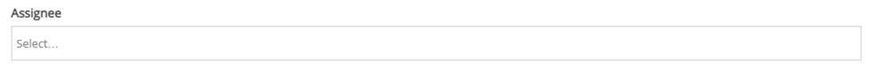
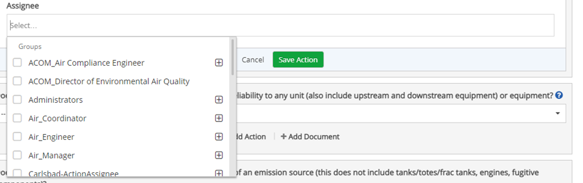
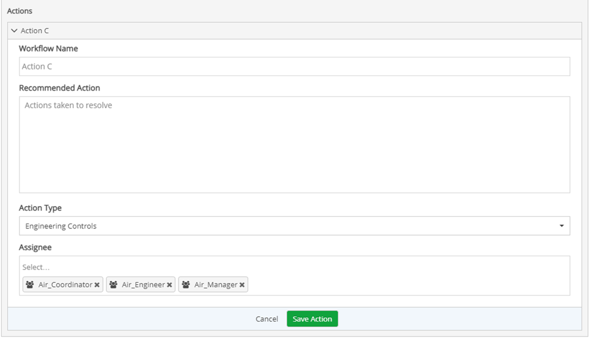
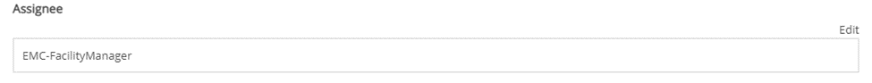
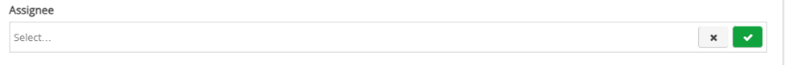
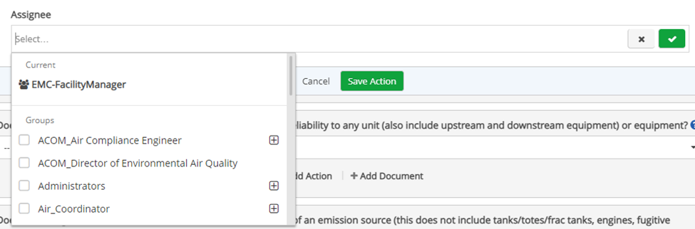

The Assignee textbox may or may not be auto populated with assignees which can either be users and/or user groups.
To add an Assignee to a blank Assignee textbox:

Click the Assignee textbox. A dropdown menu appears based on Control Behavior settings and Control Content settings.
Select Assignee(s) from the dropdown menu. As you select users/user groups, they will be added to the Assignee textbox.

Once all the appropriate assignees have been selected, click outside the menu for the menu to disappear.

Ensure all other appropriate fields have been filled in, and then click Save (Action Name).
To add an assignee to an auto-populated Assignee textbox:

Click Edit at the top right of the Assignee textbox. The Assignee text box is cleared.

Click the Assignee textbox. A drop-down list displays with two sections, the top section is titled as Current with users or user groups in bold, and below it is a list of users or user groups based on setting in designer more of the control behavior section.

Select Assignee(s) from the dropdown menu. As you select users/user groups, they will be added to the Assignee textbox.
Once all the appropriate assignees have been selected, click outside the menu for the menu to disappear.
Ensure all other appropriate fields have been filled in, and then click Save (Action Name).
To add an Inline Assignee in Designer Mode
Click the Fields ribbon.
On the left horizontal panel under the Field ribbon, click the Workflow tab, a list of workflow fields will appear.
Click Set of Edit Assignee. The Assignee field is added in the form Fields section as Assignee.
This feature is not exclusive to just Field Actions.